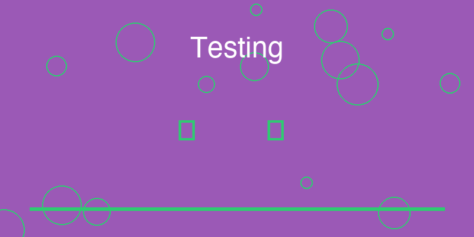

16 Testing: From “It Runs” to “It Can Be Trusted”

In the early stages of a project, developers often rely on a simple form of verification: they run the program and observe whether it produces the expected result.
If the output looks correct, the system is considered to be working.
For practice projects, this approach is usually sufficient. The developer understands the code, the system is small, and the environment is controlled.
However, as software grows and begins to evolve over time, this informal verification becomes unreliable. A change that improves one feature may unintentionally break another. A small refactor may introduce subtle errors that are difficult to detect manually.
Professional systems address this problem through testing.
Testing transforms the system’s behavior into a set of repeatable checks. Instead of relying on memory or intuition, developers use automated tests to verify that critical functionality continues to work as the system changes.
This shift marks an important step in the evolution from experimentation to reliability.
16.0.1 Why Tests Matter
Testing provides two essential benefits.
First, it creates confidence. Developers can modify the system without constantly fearing that hidden problems will appear. When tests pass, they serve as evidence that the system still behaves as expected.
Second, tests act as living documentation. Each test demonstrates how a particular part of the system should behave. New developers can read tests to understand the intended behavior of the software.
In this way, testing not only protects the system from regression but also clarifies its design.
Without tests, the only reliable way to verify behavior is to run the entire application manually. As the system grows, this approach becomes impractical.
16.0.2 Unit Tests
Unit tests focus on the smallest pieces of the system.
A unit test typically examines a single function, class, or module in isolation. By controlling the inputs and observing the outputs, the test verifies that the component behaves correctly under specific conditions.
Because unit tests isolate individual components, they are fast to run and easy to diagnose when failures occur.
They allow developers to confirm that the fundamental building blocks of the system behave as expected.
However, unit tests alone cannot guarantee that different components interact correctly.
16.0.3 Contract Tests
Contract tests examine the agreements between components.
Whenever two parts of a system communicate—such as a client calling an API or one service interacting with another—they rely on shared expectations about data formats and behavior.
A contract test verifies that these expectations remain valid.
For example, if an API promises to return a specific structure for a particular request, contract tests ensure that the structure remains consistent even as the internal implementation evolves.
These tests protect the boundaries between components, preventing subtle integration problems from appearing unexpectedly.
16.0.4 End-to-End Tests
End-to-end tests examine the system as a whole.
Instead of focusing on individual components, these tests simulate realistic workflows. They follow the same paths that real users or external systems would take when interacting with the software.
For example, an end-to-end test might simulate creating a new record, retrieving it through an interface, and verifying that the result appears correctly.
Because these tests exercise the entire system, they provide strong evidence that the major features operate correctly in real conditions.
However, they are usually slower and more complex than other tests, so they are often used selectively.
16.0.5 Testing the Critical Paths
One common misconception about testing is the belief that success requires extremely high test coverage.
While coverage metrics can be useful indicators, professional systems rarely focus exclusively on maximizing numerical coverage.
Instead, they concentrate on protecting the critical paths of the system.
A critical path represents a sequence of operations that the system must perform reliably in order to fulfill its core purpose.
For example, if an application’s primary function is to record transactions and generate reports, the workflow that creates and retrieves transactions forms a critical path.
Testing these essential workflows ensures that the system’s core functionality remains stable even as the code evolves.
By prioritizing the most important behaviors, developers can achieve strong reliability without overwhelming the project with unnecessary tests.
16.0.6 From Working Code to Reliable Systems
The introduction of testing represents a shift in how developers think about correctness.
In practice projects, correctness is often verified informally: the developer runs the program, observes the output, and concludes that the system works.
Professional systems adopt a more durable approach. They encode expectations into automated tests that run repeatedly whenever the system changes.
These tests protect the system against regression, clarify its intended behavior, and provide confidence that the software will continue to operate as expected.
A program that merely runs may be impressive during a demonstration.
A system that consistently passes its tests becomes trustworthy.
And trustworthiness is one of the defining characteristics of professional software.
16.1 实践指南：测试金字塔实施策略
有效的测试策略需要平衡覆盖率和维护成本。以下是一个实用的测试实施框架。
16.1.1 测试金字塔模型
/\
/E2E\ 少量（5-10%）
/------\ 高成本，高价值
/集成测试\ 适量（20-30%）
/----------\ 中等成本，中等价值
/ 单元测试 \ 大量（60-75%）
/--------------\ 低成本，基础保障原则： - 底部宽：大量单元测试，快速反馈 - 中间稳：适量集成测试，验证协作 - 顶部尖：少量E2E测试，验证流程
16.1.2 测试实施SOP
第一步：识别关键路径
- 列出系统的核心功能
- 识别用户最常使用的流程
- 确定系统不可失败的场景
第二步：设计单元测试
- 为每个核心函数编写测试
- 测试正常情况和边界情况
- 确保测试独立且快速运行
第三步：设计集成测试
- 测试模块间的交互
- 测试外部依赖的集成
- 使用测试替身隔离依赖
第四步：设计E2E测试
- 测试关键用户流程
- 从用户角度验证系统
- 保持测试数量最少
第五步：建立CI/CD
- 所有测试在每次提交时运行
- 阻止失败的代码合并
- 维护测试套件的健康状态
16.1.3 单元测试最佳实践
测试结构：AAA模式
def test_calculate_total_price():
# Arrange（准备）
items = [Item(price=10), Item(price=20)]
discount = 0.1
# Act（执行）
total = calculate_total_price(items, discount)
# Assert（断言）
assert total == 27.0命名约定：
test_<功能>_<场景>_<预期结果>- 示例：
test_login_with_valid_credentials_succeeds - 示例：
test_login_with_invalid_password_fails
16.1.4 快速诊断：你的测试策略是否健康？
回答以下问题：
16.2 本章总结
测试是构建可信系统的关键工具。它不仅保护系统免受回归影响，还澄清了系统的设计意图。
通过遵循测试金字塔，我们可以在保持高覆盖率的同时控制维护成本。单元测试提供快速反馈，集成测试验证协作，E2E测试确保端到端流程正常工作。
测试不是负担，而是投资的回报。每一行测试代码都在为系统的长期稳定性买单。
下一章，我们将探讨性能和限制。如何知道系统的边界在哪里？当数据增长或负载增加时，系统会如何反应？
实践建议：
- 测试先行：在新功能开发前先编写测试，这会帮助你思考接口设计。
- 保持测试简单：测试应该容易理解和维护，避免复杂的测试逻辑。
- 定期重构测试：当代码变化时，及时更新测试，删除过时的测试。
- 监控测试健康：跟踪测试覆盖率、运行时间和失败率。
立即行动：
选择你的项目中的一个核心功能，为它编写一个单元测试。确保测试清晰、快速且有价值。